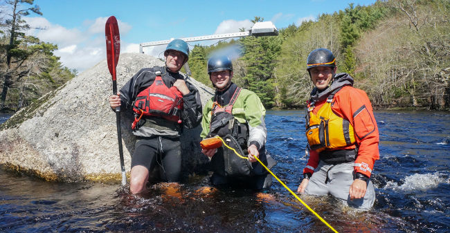

About the gauge
CKNS and MetOcean are pleased to offer Nova Scotia paddlers real-time water levels of the beautiful Medway River. The Medway River is a 75 km river in Queen's County, with a medium-volume stretch of class II/III whitewater between Greenfield and Buggy Hole. This section is home to popular play features such as Perfect Wave and Fisher's Hole, and well-travelled rapids Bangs Falls, Bear Falls and Buggy Hole.
The river level is measured in real-time using a custom made gauge built for us by our friends at MetOcean. The gauge uses satellite communication and ultrasonic technology to send data to the CKNS website conveniently available to you on your computer or smartphone.
The gauge was built by MetOcean engineer and local paddler Leigh Woltman  . The gauge installation was aided by the generous volunteer efforts of local paddlers Karl Vollmer and Dave Dunne. In other words this is a community project that was completed by paddlers for paddlers, with generous help from CKNS and MetOcean!
. The gauge installation was aided by the generous volunteer efforts of local paddlers Karl Vollmer and Dave Dunne. In other words this is a community project that was completed by paddlers for paddlers, with generous help from CKNS and MetOcean!
